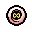
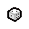

««« Glosario de items de TBOI »» »
[ a ]
[ b ]
[ c ]
[ d ]
[ e ]
[ f ]
[ g ]
[ h ]
[ i ]
[ j ]
[ k ]
[ l ]
[ m ]
[ n ]
[ o ]
[ p ]
[ q ]
[ r ]
[ s ]
[ t ]
[ u ]
[ v ]
[ w ]
[ x ]
[ y ]
[ z ]
Letra A
- Lista de palabras de objetos de TBOI que comienzan con "A"
- Abyss

- Alabaster Box
- Anima Sola
Letra B
- Lista de palabras de objetos de TBOI que comienzan con "B"
- Bag of Crafting
- Berserk
- Blank Card
Letra C
- Lista de palabras de objetos de TBOI que comienzan con "C"
- Crack the Sky
- Crooked Penny
- Crystal Ball

Letra D
- Lista de palabras de objetos de TBOI que comienzan con "D"
- D Infinity
- D1

- D4
Letra E
- Lista de palabras de objetos de TBOI que comienzan con "E"
- Eden's Soul
- Eraser
- Eternal D6
Letra F
- Lista de palabras de objetos de TBOI que comienzan con "F"
- Flip
- Forget Me Now
- Friendly Ball
Letra G
- Lista de palabras de objetos de TBOI que comienzan con "G"
- Genesis
- Glowing Hourglass
- Guppy's Head
- Ghost Pepper

Letra H
- Lista de palabras de objetos de TBOI que comienzan con "H"
- Hold
- Head of Krampus
- How to Jump

Letra I
- Lista de palabras de objetos de TBOI que comienzan con "I"
- Infestation 2
- Ipecac
- Iron Bar

Letra J
- Lista de palabras de objetos de TBOI que comienzan con "J"
- Jesus Juice
- Judas' Shadow
- Juicy Sack
Letra K
- Lista de palabras de objetos de TBOI que comienzan con "K"
- Kamikaze!
- Keeper's Box
- Kidney Bean
Letra L
- Lista de palabras de objetos de TBOI que comienzan con "L"
- Latch Key
- Leech
- Lil Brimstone
Letra M
- Lista de palabras de objetos de TBOI que comienzan con "M"
- Magic Mushroom

- Magic Scab

- MEAT!
Letra N
- Lista de palabras de objetos de TBOI que comienzan con "N"
- Number One
- Notched Axe

Letra O
- Lista de palabras de objetos de TBOI que comienzan con "O"
- Odd Mushroom
- Old Bandage

- Ouija Board

Letra P
- Lista de palabras de objetos de TBOI que comienzan con "P"
- Pageant Boy

- Pentagram
- PHD
- Piggy Bank

- Pyromaniac
Letra Q
- Lista de palabras de objetos de TBOI que comienzan con "Q"
- Quints
Letra R
- Lista de palabras de objetos de TBOI que comienzan con "R"
- Raw Liver

- Rotten Baby

- Rotten Meat

- Rubber Cement

- Roid Rage

Letra S
- Lista de palabras de objetos de TBOI que comienzan con "S"
- Sack of Pennies

- Sacred Heart

- Sagittarius

Letra T
- Lista de palabras de objetos de TBOI que comienzan con "T"
- Taurus
- Tech.5
- The Battery

- Tech X

- Tractor Beam

Letra U
- Lista de palabras de objetos de TBOI que comienzan con "U"
- Undefined
- Unicorn Stump

- Urn of Souls

Letra V
- Lista de palabras de objetos de TBOI que comienzan con "V"
- Void
- Vade Retro

- Ventricle Razor

Letra W
- Lista de palabras de objetos de TBOI que comienzan con "W"
- We Need to Go Deeper!

- Wooden Nickel

- Wire Coat Hanger

Letra X
- Lista de palabras de objetos de TBOI que comienzan con "X"
- X-Ray Vision

Letra Y
- Lista de palabras de objetos de TBOI que comienzan con "Y"
- Yuck Heart

- Yum Heart

- YO LISTEN!

Letra Z
- Lista de palabras de objetos de TBOI que comienzan con "A"
- Zodiac
Subir hasta arriba↑